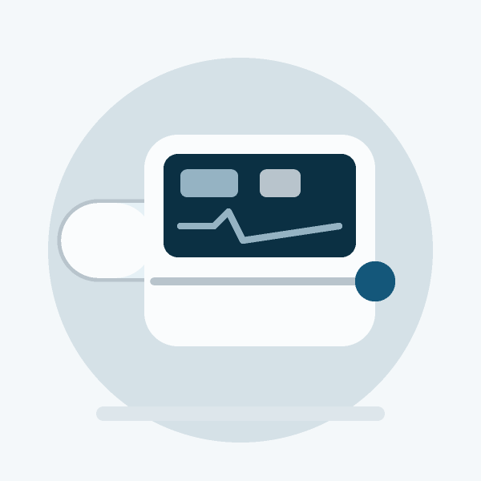
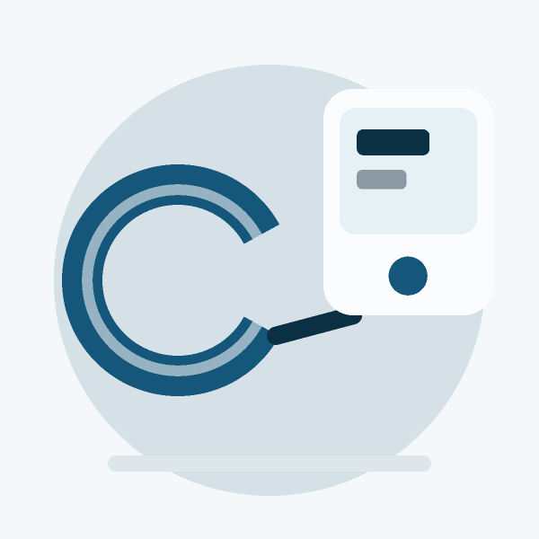
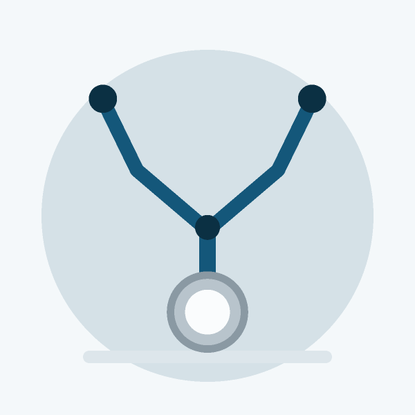

محصولات فروشگاه
محصولات فروشگاه
محصول تازه و تغییرهای حساس پس از تأیید مدیر منتشر میشوند. موجودی همیشه فوری اعمال میشود.

پالس اکسیمتر انگشتی (نمونه) منتشرشده- قیمت
- ۱,۲۹۰,۰۰۰ تومان
- موجودی
- موجودی ۱۹
- کد SKU
- DEMO-OXI-03
- دسته
- diagnostics

فشارسنج بازویی دیجیتال (نمونه) منتشرشده- قیمت
- ۳,۸۹۰,۰۰۰ تومان
- موجودی
- موجودی ۷
- کد SKU
- DEMO-BPM-02
- دسته
- diagnostics

گوشی پزشکی دوطرفه (نمونه) منتشرشده- قیمت
- ۲,۴۵۰,۰۰۰ تومان
- موجودی
- موجودی ۱۲
- کد SKU
- DEMO-STETH-01
- دسته
- diagnostics
۳ محصول
ورود و خروج CSV
خروجی فقط محصولهای همین فروشگاه را دارد. ستون شناسه و وضعیت فقط برای خواندن است و هنگام ورود نادیده گرفته میشود.